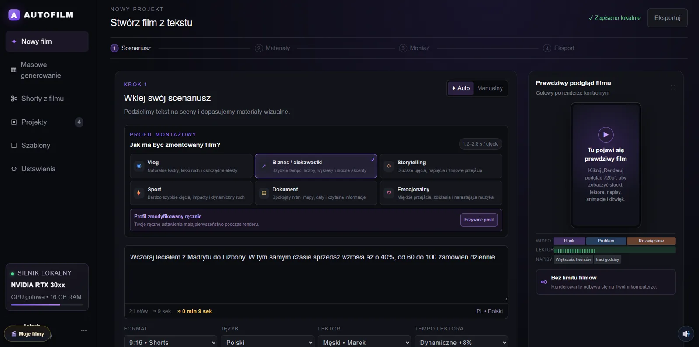
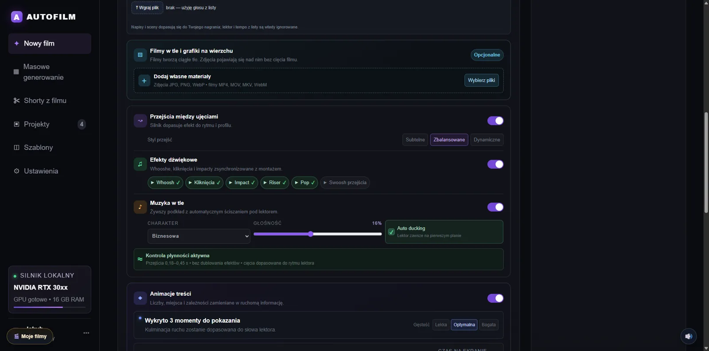
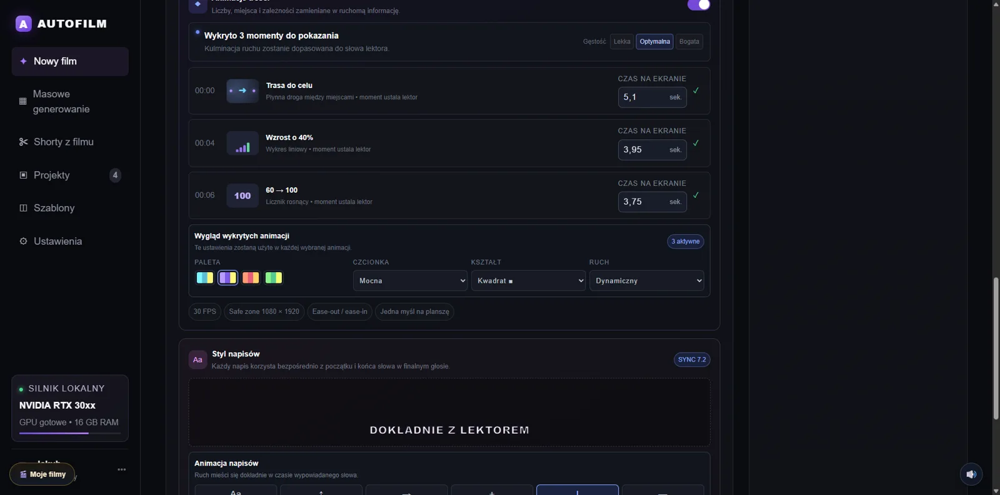
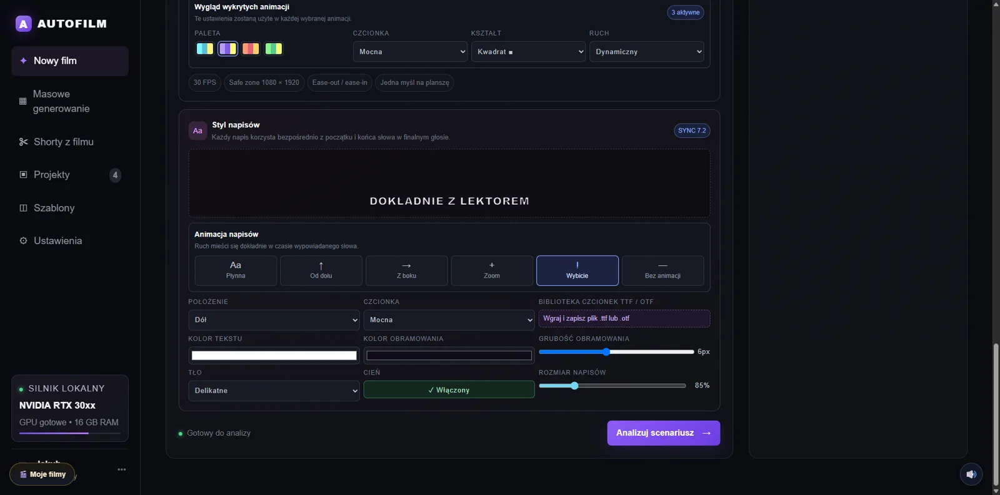
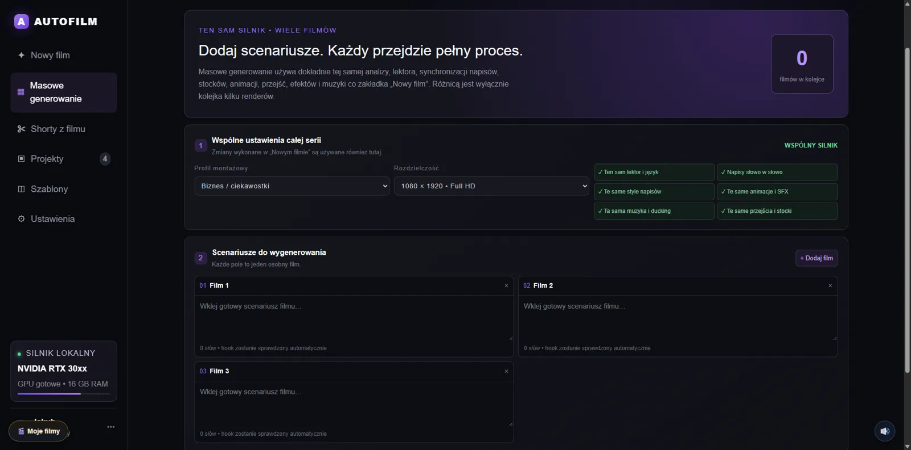
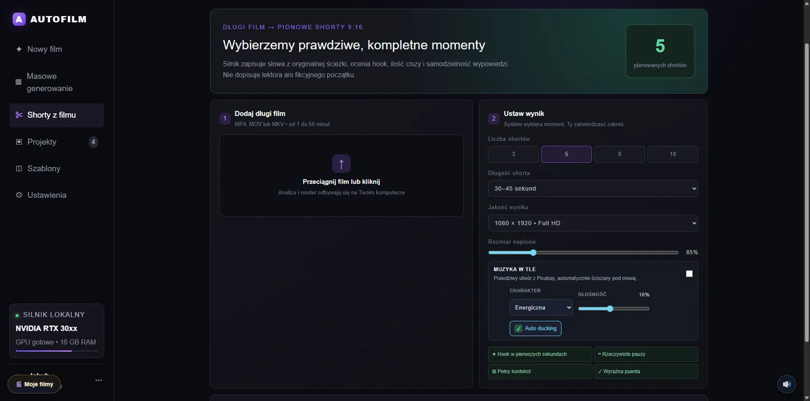

Autofilm
Program do montowania, generowania i tworzenia filmów dla firm, marek i innych klientów.A program for editing, generating and creating videos for companies, brands and other clients.
Zobacz, jak to działaSee how it works
Z programuInside the program






Film z tekstuVideo from text
Wklejasz scenariusz, a program dzieli go na sceny i dopasowuje materiały.Paste a script and the program splits it into scenes and matches visuals.
Masowe generowanieBulk generation
Kolejka wielu filmów z jednego zestawu ustawień.A queue of many videos from one set of settings.
Shorty z długiego filmuShorts from a long video
Pionowe shorty 9:16 wybierane z dłuższego nagrania.Vertical 9:16 shorts picked from a longer recording.
Lokalnie na Twoim komputerzeLocal on your computer
Analiza i renderowanie odbywają się na Twoim komputerze.Analysis and rendering run on your computer.
W subskrypcjiIncluded
- Program do pobraniaDownloadable program
- Bieżące aktualizacjeOngoing updates
Zacznij terazGet started
Płatność i pobranie programu odbywają się na Gumroad.Payment and download happen on Gumroad.
Subskrybuj na GumroadSubscribe on Gumroad